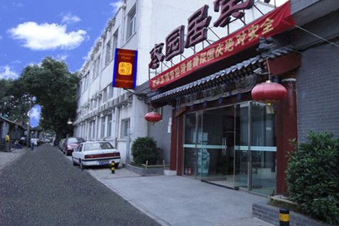
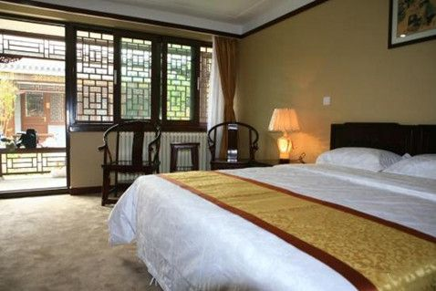

The Temple of Heaven is the largest and most representative existing masterpiece among China’s ancient sacrificial buildings.
Address: No. 1, Tiantan Road, Dongcheng District, Beijing.
Beijing, the Capital of China, has become an international cosmopolis. The metropolis is governed as a direct-controlled municipality under the national government, with more than 20 million population and 16 urban and suburban districts covering 16,410.54 Square Kilometers.
| 1. Dongcheng District | 2. Xicheng District |
| 3. Chaoyang District | 4. Haidian District |
| 5. Fengtai District | 6. Shijingshan District |
| 7. Fangshan District | 8. Mentougou District |
| 9. Tongzhou District | 10.Shunyi District |
| 11.Huairou District | 12.Miyun District |
| 13.Pinggu District | 14.Daxing District |
| 15.Changping District | 16.Yanqing District |
| Spring: | 1℃ - 12℃ |
| Summer: | 18℃ - 29℃ |
| Autumn: | 15℃ - 25℃ |
| Winter: | -5℃ - 5℃ |
Beijing has a rather dry, monsoon-influenced humid continental climate, characterized by hot, humid summers, and generally cold, windy, dry winters. Spring can bear witness to sandstorms blowing in from the Mongolian steppe, accompanied by rapidly warming, but generally dry conditions. Autumn, like spring, sees little rain, but is crisp and short.
The monthly daily average temperature in January is −3.7℃, while in July it is 26.2℃. Precipitation averages around 570 mm (22.4 in) annually, with close to three-fourths of that total falling from June to August. Extremes have ranged from −27.4℃ to 42.6℃.
Up to now, there has been a recorded history of over 3000 years and it has developed prosperously. Evidence of human ancestry dating back to 700,000 years ago has been found in such places as Zhoukoudian in the southwest part of Beijing, where the remains known as 'Peking Man' were found.
While the city's origins can be traced back to over 2,000 years ago, its true significance came about in the early years of the Western Zhou Dynasty (11th century BC-771 BC). During this time the emperor gave the feudal lords under his rule plots of land. One of these plots of land (or feod), called 'Ji City', was the capital of the kingdom 'Ji' at that time. This city was the earliest in Beijing history. By the time of the Eastern Zhou Period (476 BC-221 BC), the kingdom Ji no longer existed, being replaced by the kingdom 'Yan'. However, Ji was still the capital city at that time.
From the time the Emperor Qin Shi Huang unified China in the year 221 BC, Beijing became a strategic place and local kaiserdom center in the northern part of China. From the year 581 to 618 (Sui Dynasty), Beijing was called 'Zhuo' and had a population of 130,000 people. From 618 to 907 (Tang Dynasty), Beijing was called 'You'. During these two dynasties, it was not only a strategic military place but also the major trade center.
In the year 938 of Liao Dynasty (916-1125), the city became the alternate capital of the kingdom of 'Liao' which was founded by the minority ethnic group Qidan who lived in the northeast of China. Because Beijing of that time was located in the south part of their kingdom, it was renamed 'Nanjing' (in Chinese, 'Nan' means 'in the south place').
There are 7 public holidays in a year in China, including New Year's Day, Spring Festival, Qingming Festival, May Day, Dragon Boat Festival, Mid-Autumn Festival and National Day. At the festivals, all Chinese people will be on vacation.
Chinese Banks are open daily throughout the week from 9:00 - 17:00.
Most Chinese Chemists normally keep shops hours opening from 9:00 - 17:00 whiles some are always remain opened 24 hours.
Hospitals in Beijing are operated between the hours of 7:00 - 17:00, whilst emergency is 24 hours.
Daily between the hours of 9:00 - 17:00.
Shopping malls, stores and supermakets usually opens daily from 9:00 - 21:00.
The Temple of Heaven is the largest and most representative existing masterpiece among China’s ancient sacrificial buildings.
Address: No. 1, Tiantan Road, Dongcheng District, Beijing.
The Palace Museum, also called The Forbidden City, was the seat of Imperial power for 500 years, and it is now one of the major tourist attractions in China.
Address: No. 4 Jingshan Front Street, Dongcheng District, Beijing.
Badaling Great Wall was officially opened to tourists in 1958. It was the earliest section of the Great Wall to be opened to tourists and receives the largest number of visitors.
Address: In the southwestern part of Yanqing District, Beijing.
Being the largest and most well preserved royal park in China, The Summer Palace greatly influences Chinese horticulture and landscaping with its famous natural vistas and points of cultural interest.
Address: No. 19, Xinjiangongmen Road, Haidian District, Beijing.
Prince Gong's Mansion is the most well preserved mansion in Beijing.
Address: No. 17, Qianhaixi Street, Xicheng District, Beijing.
The National Museum of China is located to the east of Tiananmen Square and south of Chang an Street, opposite to the Great Hall of the People.
Address: East of Tiananmen Square, No. 16, East Changan Avenue, Dongchang District, Beijing.
National Stadium, also called Birds' Nest, is the main stadium of the 29th Summer Olympic Games, located in the central area of Beijing Olympic Park, covers an area of 20.4 hectares, can accommodate 9.1 million people.
Tsinghua University was established in 1911, originally under the name “Tsinghua Xuetang”. The University has now over 25,900 students, including 13,100 undergraduates and 12,800 graduate students.
Address: No. 30, Shuangqing Road, Haidian District, Beijing.
Address: Jia 9 Zhengjue Hutong, Xicheng District, Beijing
BusinessTime
Check-in: from 14:00; Check-out: before 12:00
Facilities
Wi-Fi: Yes
Parking: Yes
Telephone
+86 10 83288366
Address: No.14 Liulisi Hutong, Dongcheng District, Beijing
BusinessTime
Check-in: 12:00 - 00:00; Check-out: 12:00 - 13:00
Facilities
Wi-Fi: Yes
Parking: Yes
Telephone
+86 10 64026396
Address: No.17 Zhangwang Hutong, Jiu Gulou Street, Dongcheng District, Beijing

BusinessTime
24 hours
Facilities
Wi-Fi: Yes
Parking: Yes
Telephone
+86 10 64031173
Address: No.59 Xinjiekou East Street, Xicheng District, Beijing

BusinessTime
Check-in: from 14:00; Check-out: before 12:00
Facilities
Wi-Fi: Yes
Parking: No
Telephone
+86 10 66162026
Address: No.8 East Wangfujing Street, Dongcheng District, Beijing
BusinessTime
Check-in: from 15:00; Check-out: before 12:00
Facilities
Wi-Fi: Yes
Parking: Yes
Telephone
+86 10 58128888
Address: No.3 East Qian Men Street, Dongcheng District, Beijing
BusinessTime
Check-in: from 14:00; Check-out: before 12:00
Facilities
Wi-Fi: Yes
Parking: Yes
Telephone
+86 10 51666064
Address: Building 17, A5 Shuguangxili Community, Chaoyang District, Beijing
BusinessTime
Check-in: from 14:00; Check-out: before 12:00
Facilities
Wi-Fi: Yes
Parking: Yes
Telephone
+86 10 58296999
Address: No.100 Dongsishitiao, Dongcheng District, Beijing
BusinessTime
Check-in: from 12:00; Check-out: before 12:00
Facilities
Wi-Fi: Yes
Parking: Yes
Telephone
+86 10 51666064
As for Beijing Cuisine, people also call it the Capital City cuisine. Beijing was the capital city for the Liao, Jin, Yuan, Ming, and Qing dynasties. Except for the Ming Dynasty, all the rulers of these dynasties were from northern nomadic tribes.
For those 500-plus years, the dishes available from Beijing's catering trade were dominated by meat dishes, which corresponded to the eating habits of the ruling class. The Mongolian rulers of the Yuan Dynasty were especially fond of mutton, and 80% of the dishes in their palace were made of mutton. These mutton dishes still are made today, such as stewed mutton, instant – boiled mutton, quick – fried mutton tripe, and fried dumplings with minced mutton.
The Qing Dynasty rulers ate pork before moving to Beijing from Shenyang in northeastern China. Their cooking methods were stewing, roasting, and boiling. Pork and mutton have been equally represented in Beijing cuisine since the Qing Dynasty as a result of the dietetic influence of the Manchus. Roast and stewed pig, pork dishes, and pig's offal stewed in ceramic pots offered by the Shaguoju Restaurant (ceramic pots restaurant) were the first to be offered to suit the eating preferences of the Manchus. Gradually these dishes were accepted by the residents of Beijing.
Specialties: Mustard duck web, boiled duck liver, seasoned duck gizzard, hot and spicy shredded duck wing, crystal duck delicacy, quick-fried duck heart, dry-fried four delicacies
Address: 32 Qianmen Street, Dongcheng District, Beijing
Telephone: +86 10 65112418
Founded in 1903, Donglaishun Muslim Restaurant is a time-honored tourist dining place in Beijing.
The restaurant is famous for its traditional flavor Instant-boiled Mutton hotpot. The restaurant selects the freshest mutton and cuts into paper-like slices, then serves it with special seasonings to offer you the best mutton cuisine.
To cater for the different needs of customers, the restaurant also offers traditional Muslim dishes and other specialties, such as roast duck, quick-fried mutton with onions, grilled mutton kebabs and roast leg of lamb. Enjoying food in this restaurant will be a great experience during your Beijing tour.
Address: No.198 Wangfujing Street, Dongcheng District, Beijing
Telephone: +86 10 65139661
Baoyuan Dumpling (Baoyuan Jiaozi Wu) is a dumpling heaven. Baoyuan serves traditional boiled dumplings with dozens of fresh stuffings which are sorted by type of meat and vegetable.
Address: North of 6 Maizidian Street, Chaoyang District, Beijing
Telephone: +86 10 65864967
Local snacks are a special feature of Beijing. Tourists can taste not only the local Beijing flavors, but those of other regions as well. Snack-stalls in the night markets are always popular and busy destinations.
Most restaurants in the street are open around the clock. If you are a night owl, Gui Street in Dongzhi Gate, is a good place to spend until the wee hours of the morning. The late hours of the night are usually the busiest times on this street, whose specialty is Spicy Lobster.
Picture yourself sitting in an old chair inside an ancient courtyard house under the grapevines appreciating photos from long-ago but most important savor the aroma and taste of the succulent dishes.
Address: Dongzhimennei Dajie, Dongcheng District, Beijing
Taxis in Beijing are plentiful, affordable and well-managed thanks to the unified management. You can easily find taxis on the road.
Taxis in Beijing are colorful, yellow body, dark blue, green or purple car roof. The logos of taxi companies are printed on the vehicle door and the top light box of the taxi. Different from taxis in other city, the taxis in Beijing don’t have a transparent shield around the driver's seat. A taximeter is placed over the console. The taxi drivers in Beijing are real warm-hearted although they are not good at English. Hence, it would be better to write down or print the destination in Chinese to show them.
You can call +86 10 96103 for taxi service.
For most individual tourists, metro or Subway (Underground) is an irreplaceable option in the course of travel. Hence, we’d like to introduce you the Beijing Subway.
Beijing, as the capital city, boasts well-developed subway network. As you can see, there are 19 subway lines network in Beijing covering the whole city. It can deliver you to any corner in Beijing. Line 1 is the first subway line in Beijing built in 1971. It passes through Tian’anmen Square, the sign and the center of Beijing.
Besides well-developed subway network, bus system also plays an important role in Beijing’s public transportation. Boasting 1020 lines, the bus system delivers over 950 million people every day. Comparing to subway, it has a real long history. According to the data, the first bus line in Beijing was launched in August, 1935.
Similar to the subway, any article that possibly poses threat to public security and operation safety of the bus is prohibited, such as inflammable and explosive articles, controlled knives. In addition, some articles are allowed to carry within limited amount, such as gas lighters less than two, alcohol within 100 ml etc.
Bicycle-riding has become very popular as more people pursue a healthy life. Hence, it is no wonder that Beijing boasts convenient bicycle services. The bicycle service scene in Beijing falls into two types, one being the shared-bicycle such as Mobike and Ofo etc, and the other one being rentals of public bicycles managed by the municipal government.
Beijing, the capital of China, is also the transportation hub. There are 5 railway stations in Beijing receiving visitors from all corners of the country. Three of these railway stations occupy irreplaceable position of public transportation of Beijing.
China’s high speed railway network enjoys great reputation in the world. It’s an ideal option for short-distance tours for its high speed and punctuality. You can book tickets both on 12306.cn, the official website of Sino-rail Customer Service Center, or Ctrip, a Chinese provider of travel services. Your personal information including name, ID number, date of birth should be the same as it appears on your chosen ID, otherwise you will not be allowed to purchase the ticket.
The Beijing Capital International Airport (ICAO: ZBAA, IATA:PEK) is located in Shunyi District, northeast of Beijing. It has three terminals covering an area of 1.41 million square meters and three international standard runways. It is the busiest airport in China. It boasts 252 airlines and received over 943 million people and 606 thousand flights in 2016. It ranked top 10 of the most important airports in 2015.
The Terminal 1 is the place where domestic flights depart from and arrive in while the Terminal 2 receives both domestic flights and international flights. And the Terminal 3 is same as Terminal 2.